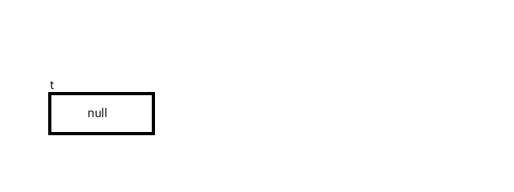
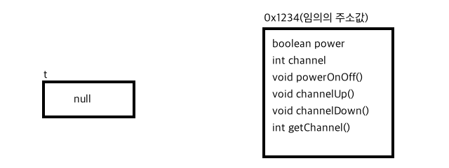

드디어 오늘부터 객체지향 프로그래밍(OOP, Object Oriented Programming) 파트를 나가기 시작했다.
이전까지는 다른 언어에도 대부분 있는 개념이었는데,
이제부터는 자바의 특성을 배울 차례인 것 같다.
객체 지향 언어는 C++/Javascript 등등이 있으므로 다른 언어를 배울 때도 유익할 것 같다.
객체? 클래스? 인스턴스?
객체지향하면 사람들은 클래스를 먼저 떠오르기 마련인 것 같다.
하지만 객체 != 클래스이다.
객체지향 언어의 하나인 자바스크립트를 통해 보도록 하자.
출처: JavaScript : 프로토타입(prototype) 이해
JavaScript는 클래스라는 개념이 없습니다.
그래서 기존의 객체를 복사하여(cloning)
새로운 객체를 생성하는 프로토타입 기반의 언어입니다.
프로토타입 기반 언어는 객체 원형인 프로토타입을 이용하여 새로운 객체를 만들어냅니다.
이렇게 생성된 객체 역시 또 다른 객체의 원형이 될 수 있습니다.
프로토타입은 객체를 확장하고 객체 지향적인 프로그래밍을 할 수 있게 해줍니다.
즉, 클래스는 객체를 구현하기 위한 하나의 수단이지 그 자체가 객체는 아니란 것이다.
객체는 상태와 행위를 가지는 유형과 무형의 개념(?)이다.
실세계에 존재하지 않는 것들이 프로그래밍 세계에서는 객체로서 존재하기도 한다.
실세계의 객체로선 불가능한 것이 프로그래밍 세계의 객체로선 가능하기도 하다.
하지만 사람들의 이해를 돕기 위해서 실세계와 비교하다보니 오해가 빚어지기도 하는 것 같다.
또한 객체를 구현하기 위해 클래스가 월등히 많이 쓰이다 보니 중요하지 않은 것은 아니다.
이렇게 클래스를 통해 만들어진 놈을 인스턴스라고 부른다.
TV(객체) -> TV 설계도(클래스) -> LCD TV(인스턴스)
TV(객체) -> TV 설계도(클래스) -> LED TV(인스턴스)
뭐 나는 이정도로 이해를 했는데 맞는지 모르것다…
new 연산자
이는 기본형(bool, char, byte, short, int, long, float, double)이 아닌 경우에 모두 해당하는 내용이다.
기본형이 아닌 경우에 모두 참조 변수이기 때문에
클래스의 인스턴스틑 new 연산자를 통해 생성된다.
(고 생각할 수 있다. 그 오해를 아래에서 풀어봤다.)+ 170213 내용 추가
그 오해가 오해가 아니었다.
생성자로는 인스턴스 생성이 아닌 인스턴스 변수 초기화만 해준다.
new 자체가 인스턴스 생성 + 주소값 반환까지 해주는 녀석이란다.
예외로 String 클래스는
String str = new String(“asdf”);
String str = “asdf”;
두 가지 모두 허용한다.
또한 자바에서 모든 참조 변수는 클래스이다.
심지어 문자’열’도 클래스, 즉 참조 변수라는 사실을 알아둬야한다.
JS의 Object, Array, Function, RegExp도 해당하는 내용일지는 모르겠으나 아마 해당하지 않을까…싶다.
기본적으로 클래스를 만들어서 쓰는 과정은 아래와 같다.
응집도와 결합도에 내한 내용은 아래 링크를 참조하자.
getter와 setter에 대한 이유는 아래 링크를 참조하자.
- 인스턴스 변수의 getter, setter 설정의 궁금증123456789101112131415161718192021// test 패키지 내에 TV 클래스// 디폴트 패키지의 클래스는 어떻게 import가 안 되는 것 같다.package test;public class TV {// 외부(test 클래스와 같이)에서는 상태(power, channel 등)는 알 필요 없고,// 행위(메소드)와 행위 수행을 위한 입출력 값만 알면 되기 때문에// 상태는 숨기고, 행위를 드러내야// 결합도는 낮추게 되고, 응집도를 높이게 되므로 유지 보수가 좋은 프로그램이 된다고 알고 있다.// 하지만 상태를 알아내야 할 필요도 있기 때문에 getter 메소드를 만드는 것으로 알고 있다.// getter와 setter가 존재하는 이유가// 나중에 확장성을 고려했기 때문이라는데 실제로 뭐 그렇게 쓰는지는 모르겠다...// 기본 생성자가 없기 때문에 기본값인 false와 0으로 초기화 된다.private boolean power;private int channel;public void powerOnOff() { power = !power; }public void channelUp() { channel++; }public void channelDown() { channel--; }public int getChannel() {return channel; }}
|
|
C++의 클래스를 보고 나니 이 역시 메모리의 동적 할당(heap 영역에 할당)되는 것 같다.
자세한 내용은 아래 두 포스트에 설명해놓았다.
new 연산자의 오해
나 또한 이런 오해를 가지고 있었다.new 연산자를 통해 클래스의 인스턴스가 생성되는구나!완전히 틀렸다.
new 없이도 클래스의 인스턴스의 생성은 가능하다.
그 말 뜻을 한 번 파헤쳐보자.
오해가 아니라 맞는 말이었다.
TV t;

변수의 타입을 TV로 지정했다.
하지만 TV라는 변수 타입은 없으므로 참조 타입이라고 봐야할 것 같다.
그 참조 변수의 타입은 클래스의 이름인 것 같다.
참조 변수는 값을 가지는 게 아니라 참조할 메모리의 주소값을 가진다.
하지만 아직 참조 변수 선언만 했으므로 안에는
참조 변수의 기본 값인 null이 들어가있을 것이다.t = new TV();
이 부분을 세 가지 관점에서 나눠서 보고자 한다.
- t = new
TV();

TV()라는 생성자(여기서는 기본 생성자)만 호출해도클래스의 인스턴스는 생성되게 된다.
인스턴스 변수의 초기화(생성자 호출)만 이루어진다. - t =
newTV();
new라는 키워드는 C언어의 &와 비슷하다고 보면 될 것 같다.
해당 변수가 할당된 메모리 상의 주소값을 얻어오는 연산자이다.
즉 저 키워드를 씀으로써 rvalue에는 0x1234가 들어가게 된다.
위와 더불어 인스턴스 생성까지 이루어진다. - t
=new TV();
= 이라는 대입, 할당 연산자를 사용하여
rvalue인 0x1234를 lvalue인 t에 할당, 대입하면서
클래스의 인스턴스의 주소를 할당하게 되는 것이다.
즉, new 연산자를 통해 클래스의 인스턴스가 생성되는 게 아니라 맞다!!주소값만을 얻어내는 연산자이지, 실제로는생정자(TV())를 통해 만들어지게 되는 것이었다게 아니라 생성자로는 인스턴스 변수의 초기화만 이루어진다!!
데이터 저장 개념의 발전 과정
변수, 하나의 데이터만 저장 가능.
123456int a = 1;int b = 2;int c = 3;double d = 1.2;double e = 3.3;double f = 4.4;배열, 동일한 데이터의 타입들을 저장 가능.
12int a[] = {1, 2, 3};double b[] = {1.2, 3.3, 4.4};구조체(C언어에서 등장함), 동일하지 않은 데이터의 타입들도 저장 가능.
1234struct a {int arr[];double arr2[];};클래스, 동일하지 않은 데이터 타입들 + 함수
1234567class a {int a[] = {1, 2, 3};double b[] = {1.2, 3.3, 4.4};void println() {System.out.println("얀냐셈!");};}
C언어와 같은 절차 지향 언어에서는 데이터는 데이터끼리, 함수는 함수끼리 따로 생각을 하였다.
하지만 함수는 주로 데이터를 가지고 작업을 하기 때문에
객체 지향 언어인 C++과 Java에서는 이 둘을 합친 Class가 등장하게 된 것이다.
절차 지향 언어인 C언어에서는 문자열이 문자의 배열에 그치는데 반해
객체 지향 언어인 Java에서는 문자열(데이터)과 문자열과 관련된 함수(메소드)를 같이 모아
String 클래스로 따로 뺀 이유가 위와 같다.
사용자 정의 타입
기본형(Primitive type) 외에 프로그래머가 서로 관련된 변수들을 묶어서
하나의 타입으로 새로 추가하는 것을 사용자 정의 타입(User-defined type)이라고 한다.
자바와 같은 객체 지향 언어에서는 클래스가 곧 사용자 정의 타입이다.
이 사용자 정의 타입은 프로그래머에 의해 만들어지므로 갯수에 제한이 없다.
클래스 변수
클래스의 변수는 멤버 변수(클래스 변수, 인스턴스 변수), 지역 변수로 나뉜다.
클래스 변수는 클래스가 메모리에 적재되는 순간(import건 class를 선언했건) 만들어진다.
|
|
|
|
하지만 인스턴스 변수는 클래스의 인스턴스를 생성(TV())해야지만 만들어진다.
또한 인스턴스 변수는 클래스의 인스턴스마다 고유한 값을 가지지만,
클래스 변수는 같은 클래스의 인스턴스라면 모두 그 값을 공유하게 된다.
클래스 변수(static 변수)는 같은 주소를 참조하기 때문이다.
사용할 때 클래스의 변수는 TV.b와 같이 클래스 이름.변수와 같이 사용하지만
인스턴스 변수는 t.a와 같이 인스턴스 이름.변수와 같이 사용한다.
물론 클래스 변수도 인스턴스 이름.변수와 같이 사용할 수 있지만,
인스턴스 변수와 헷갈리므로 추천하지 않는다.
궁금해서 예제를 만들어보았으니 C언어의 static 변수와 비교해보면 참 재밌다.
우선 C언어의 static 변수는 스코프가 지역 변수의 성향을 띄는데 반해
Java의 static 변수는 전역 변수의 성향을 띈다.
어디서나 접근이 가능하다.
하지만 사용하려면 클래스 이름.변수로 적어야해서 좀 불편시럽긴 하다.
또 하나 특징이 있다.
- 170211, 내용 추가
위 코드에 대한 이유는 아래 링크에서 설명하고 있다.
(Java) 자바의 정석 3판 009일차 정리
머리가 아프당…
나머지 개념은 내일이나 나중에 정리해야겠다.